Claim chi phí hỗ trợ sự kiện ECO-DRIVE & MANTAINANCE
Campaign Event – IVC duyệt ngân sách, Đại lý báo cáo chi phí thực tế & tự sinh Sales Order CRS Claim
| Ticket DevOps | Ticket 6411 |
|---|---|
| Môi trường | Partial (Sandbox) – luồng triển khai ngày 28/10/2026; phản hồi khách ngày 02/11/2026 về nghĩa các trường chi phí đã được cập nhật vào tài liệu (xem mục 7) |
| Đối tượng | Campaign (Record Type Event) và Sales Order (Record Type CRS Claim) |
| Loại sự kiện | Eco-drive seminar / Maintenance training do Đại lý (DLR) tổ chức cho khách hàng, CRS của IVC duyệt |
| Tài liệu liên quan | Quy trình quản lý tổ chức sự kiện (Campaign Event) – CRS (lập kế hoạch & duyệt kế hoạch, Bước 1 → 7) |
1. Tổng quan
Luồng Claim nối tiếp Bước 7 trong tài liệu Quy trình quản lý tổ chức sự kiện (Campaign Event) – CRS. Campaign Event đi qua 2 lần duyệt, sau lần duyệt thứ 2 hệ thống tự sinh một Sales Order Claim để IVC thanh toán khoản hỗ trợ cho Đại lý qua ERP. Luồng này thay cho giai đoạn duyệt kết quả cũ (Bước 8 → 9, Status Reporting → Completed).
| Duyệt lần 1 – duyệt kế hoạch (process CampaignCRSNew) | Duyệt lần 2 – duyệt báo cáo chi phí (process CampaignCRS2) | |
|---|---|---|
| Đại lý (DLR) | Nộp kế hoạch tổ chức sự kiện. | Tổ chức xong, nhập Actual cost (số thực tế), đính kèm chứng từ, nộp báo cáo. |
| IVC CRS | Staff CRS (Hồ Thiên Quốc hoặc Phạm Mai Trinh) nhập IVC Budget Approve (Event Organization Cost, POSM Cost) khi duyệt Campaign. | Trinh/Quốc kiểm tra, có quyền sửa Actual cost, rồi Approve. |
| Kết quả | Campaign Approved. | Campaign Report Approval, hệ thống tự sinh SO CRS Claim. |
Event): có 2 nhóm số tiền – IVC Budget Approve (ngân sách IVC chấp thuận khi duyệt kế hoạch) và Actual cost (số thực tế Đại lý báo cáo).Sales Order (Record Type mới
CRS Claim): chứng từ claim do hệ thống tự sinh, không đi approval process. SO được gửi lên ERP để tạo PO, và tự Completed khi ERP ghi nhận hóa đơn của Đại lý vào công nợ phải trả (AP) và thanh toán đủ.
2. Trường thông tin
| Field | Mới / có sẵn | Nhóm trên giao diện | Ai nhập, khi nào | Ý nghĩa |
|---|---|---|---|---|
| Campaign (Record Type Event) | ||||
| Event Organization Cost | Có sẵn | IVC Budget Approve (khối bên trái) | Staff CRS (Quốc/Trinh) nhập khi duyệt lần 1. Đại lý chỉ xem (đề xuất, chờ chốt – mục 7). | Ngân sách tổ chức sự kiện IVC chấp thuận cho Campaign. |
| POSM Cost | Có sẵn | IVC Budget Approve (khối bên trái) | Như trên. | Ngân sách POSM IVC chấp thuận cho Campaign. |
| IVC Supported Event Cost | Mới | Actual cost (tab Report & Claim) | Đại lý nhập số thực tế sau khi tổ chức xong (Campaign In Progress). Staff CRS có quyền sửa khi duyệt lần 2. | Chi phí tổ chức sự kiện thực tế đề nghị IVC hỗ trợ. Là cơ sở số tiền SO Claim. |
| IVC Supported POSM Cost | Mới | Actual cost (tab Report & Claim) | Như trên. | Chi phí POSM thực tế đề nghị IVC hỗ trợ. Là cơ sở số tiền SO Claim. |
Vehicle Type (Vehicle_Type__c): CV / LCV | Mới | Campaign Information | Đại lý, phải có trước khi IVC duyệt báo cáo. | Dòng xe của sự kiện (ticket gọi là "Campaign Type"). Quyết định mã Item Service trên SO Claim (xem mục 6). Không dùng lại field Campaign_Type__c vì field đó đang được MPR dùng cho loại sự kiện. |
| Status | Thêm 2 value | – | Hệ thống (qua approval) | Report Review và Report Approval, nằm sau In Progress và trước Completed. Status Reporting cũ bỏ khỏi Path của Campaign Event. |
Sau sự kiện, Đại lý nhập Actual cost – IVC Supported Event Cost = 10tr, IVC Supported POSM Cost = 8tr.
Duyệt lần 2: Trinh chỉnh Actual cost về 10tr + 5tr (theo ngân sách / mức trần policy) rồi Approve.
→ SO Claim có 1 dòng = 15tr. (Hệ thống chưa tự chặn Actual vượt ngân sách – xem mục 7.)
3. Sơ đồ luồng
┌─ GIAI ĐOẠN 1: DUYỆT KẾ HOẠCH (process CampaignCRSNew – chi tiết xem tài liệu Campaign Event)
│ Bước 1 DLR nộp kế hoạch .......................................... DLR Review
│ Bước 2 Dealer Manager duyệt ...................................... IVC Review
│ Bước 3 Staff CRS (Quốc HOẶC Trinh) NHẬP "IVC Budget Approve":
│ Event Organization Cost + POSM Cost (BẮT BUỘC), rồi duyệt .... Manager Review
│ (thiếu 1 trong 2 -> báo lỗi, không sang Manager CRS)
│ ↳ Profile: IVC_SAL_CRS_CRS_Staff
│ Bước 4 Manager CRS (Khôi) duyệt ................................... Approved
└─
DLR tổ chức sự kiện, đổi Status tay ........................... In Progress
┌─ GIAI ĐOẠN 2: BÁO CÁO CHI PHÍ & DUYỆT (process CampaignCRS2)
│ Bước C1 DLR nhập "Actual cost" (IVC Supported Event Cost + POSM Cost),
│ chọn Vehicle Type, ĐÍNH KÈM FILE chứng từ .................. In Progress
│ ↳ Profile: DLR_Sales_CS staff
│ Bước C2 DLR bấm "Nộp xin Phê Duyệt" ................................ Report Review <- kiểm tra Actual cost + file
│ ↳ Profile: DLR_Sales_CS staff (chủ record)
│ Bước C3 Staff CRS kiểm tra, CÓ THỂ SỬA Actual cost, Approve kèm comment .. Report Approval
│ ↳ Profile: IVC_SAL_CRS_CRS_Staff (Hồ Thiên Quốc / Phạm Mai Trinh)
│ => Hệ thống TỰ SINH Sales Order "CRS Claim" ............... SO: New
│ (Reject kèm comment -> Campaign quay về .................. In Progress)
└─
┌─ SALES ORDER CRS CLAIM (không có approval process)
│ Bước C4 SO chuyển New -> DLR Process ............................... SO: DLR Process
│ => Hệ thống gửi thông báo (chuông) + email cho Đại lý (chủ Campaign):
│ đề nghị đính kèm hóa đơn và bấm "Submit SO"
│ Bước C5 DLR đính kèm hóa đơn, bấm nút "Submit SO" ................. SO: Open <- kiểm tra hóa đơn
│ ↳ Profile: DLR_Sales_CS staff
│ => Tự động gửi ERP (hook createPurchaseOrder): tạo PO trên ERP,
│ số PO ERP trả về lưu vào SO
│ Bước C6 Kế toán IVC ghi nhận hóa đơn vào AP và thanh toán cho Đại lý trên ERP
│ => Sync master data VendTrans: Remaining Amount = 0 .... SO: Completed
│ => Campaign tự chuyển ................................. Completed
└─4. Chuỗi Status (Path)
- Campaign Event:
Planned→DLR Review→IVC Review→Manager Review→Approved→In Progress→Report Review→Report Approval→Completed. StatusReportingkhông còn trên Path. - Sales Order CRS Claim:
Cancelled→Rejected→New→DLR Process→Open→Completed. - SO CRS Claim không có các bước
SubmittedvàIVC Approvedvì không đi approval process.DLR Processlà Status mới của Sales Order.
5. Từng bước: ai làm gì
| Bước | Ai | Làm gì | Status Campaign | Status SO |
|---|---|---|---|---|
Giai đoạn 1 – duyệt kế hoạch (process CampaignCRSNew, đã có; chỉ bổ sung việc nhập ngân sách) | ||||
| A1 | Staff CRS (Hồ Thiên Quốc hoặc Phạm Mai Trinh, 1 người là xong) | Khi duyệt kế hoạch: nhập Event Organization Cost và POSM Cost (nhóm IVC Budget Approve) rồi Approve. Record được sửa vì người duyệt hiện tại có quyền sửa. | Manager Review | – |
| Giai đoạn 2 – Đại lý báo cáo chi phí | ||||
| C1 | DLR CS staff | Sau khi tổ chức xong sự kiện, nhập Actual cost (IVC Supported Event Cost, IVC Supported POSM Cost), chọn Vehicle Type và đính kèm file chứng từ ở tab Report & Claim. | In Progress | – |
Phê duyệt báo cáo chi phí (process CampaignCRS2) | ||||
| C2 | DLR CS staff (chủ record) | Bấm "Nộp xin Phê Duyệt". Báo lỗi, không cho submit nếu thiếu 1 trong 2 Actual cost hoặc tab Report & Claim chưa có file nào. | Report Review | – |
| C3 | Hồ Thiên Quốc hoặc Phạm Mai Trinh (1 người là xong) | Kiểm tra chứng từ. Được sửa Actual cost nếu cần, ghi lý do vào comment rồi Approve. Hệ thống tự sinh SO CRS Claim. Nếu không đạt: Reject kèm comment, Campaign quay về In Progress để DLR sửa và nộp lại. | Report Approval(Reject: In Progress) | New(Reject: không sinh SO) |
| Sales Order CRS Claim (không có approval process) | ||||
| C4 | IVC CRS (đề xuất, chờ chốt) | Chuyển SO từ New sang DLR Process. Hệ thống gửi thông báo trên hệ thống và email cho Đại lý (chủ Campaign) đề nghị đính kèm hóa đơn tương ứng và bấm "Submit SO". | Report Approval | DLR Process |
| C5 | DLR CS staff | Đính kèm file hóa đơn vào SO rồi bấm nút "Submit SO" (nút chỉ hiện khi SO ở DLR Process). Báo lỗi nếu SO chưa có file hóa đơn. Hệ thống tự gửi SO lên ERP và tạo PO trên ERP. Số PO ERP trả về được lưu vào SO. | Report Approval | Open |
| C6 | Kế toán IVC (trên ERP), rồi Hệ thống | Kế toán IVC ghi nhận hóa đơn của Đại lý vào công nợ phải trả (AP) và thanh toán trên ERP. Giao dịch nhà cung cấp (VendTrans) về DMS qua Sync Master Data và được gắn vào SO theo số PO; khi toàn bộ VendTrans của SO có Remaining Amount = 0 (đã thanh toán đủ) hệ thống tự chuyển SO sang Completed. Campaign cũng tự chuyển Completed. | Completed | Completed |
6. Quy tắc hệ thống
- Quyền nhập (FLS):
- Nhóm IVC Budget Approve (Event Organization Cost, POSM Cost): Staff CRS sửa được; Đại lý chỉ xem (đề xuất).
- Nhóm Actual cost (IVC Supported Event Cost, IVC Supported POSM Cost): Đại lý sửa được; Staff CRS cũng sửa được.
- Điều kiện duyệt kế hoạch (A1): Staff CRS phải nhập đủ Event Organization Cost và POSM Cost (IVC Budget Approve) thì mới Approve được để sang Manager CRS. Thiếu thì báo lỗi "Vui lòng nhập Event Organization Cost và POSM Cost (IVC Budget Approve) trước khi duyệt.", Campaign vẫn ở
IVC Review. Giá trị0được chấp nhận, chỉ để trống mới bị chặn. Reject không bị chặn. - Điều kiện submit báo cáo (C2): bắt buộc có IVC Supported Event Cost, IVC Supported POSM Cost và ít nhất 1 file ở tab Report & Claim. Thiếu điều kiện nào thì báo lỗi và Campaign vẫn ở
In Progress. - Điều kiện Approve (C3): phải có Vehicle Type và đủ 2 Actual cost; còn file đính kèm. Thiếu thì báo lỗi và Campaign vẫn ở
Report Review. - SO Claim được sinh khi Campaign sang
Report Approval(C3), mỗi Campaign chỉ 1 SO:- Record Type
CRS Claim, StatusNew, Account là Đại lý của Campaign, SO liên kết ngược về Campaign. - 1 dòng SO line, số tiền = IVC Supported Event Cost + IVC Supported POSM Cost (Actual cost sau khi CRS chỉnh) (đề xuất, chờ chốt – mục 7).
- Item Service theo Vehicle Type:
CV→CRS_CAM_CVV,LCV→CRS_CAM_LCV. Item do chị Hiếu (Đào Thị Xuân Hiếu) thiết lập trên ERP (đã tạo trên UAT). - Không dùng ERP Default Dimension: SO CRS Claim để trống field này, payload gửi ERP
defaultdimension = ""(ERP xác nhận).
- Record Type
- Reject ở
Report Review: người duyệt ghi lý do vào comment, Campaign quay vềIn Progress, không sinh SO. - SO Claim không chạy approval process. Đại lý chuyển
DLR Process→Openbằng nút Submit SO; SO phải có file hóa đơn đính kèm. Nút "Submit for Approval" được ẩn trên SO CRS Claim. - Thông báo khi SO
New→DLR Process: thông báo trên hệ thống (chuông) và email gửi cho chủ Campaign (user Đại lý), nội dung đề nghị đính kèm hóa đơn và bấm "Submit SO", kèm link SO. - Thông báo lỗi song ngữ: user có ngôn ngữ Vietnamese (các profile DLR) thấy tiếng Việt, user khác thấy tiếng Anh.
- Gửi ERP khi SO sang
Open: dùng hook có sẵncreatePurchaseOrder(đang dùng cho SO Service, FLS Support, Support SPV khi sangAccepted), tạo PO trên ERP:- Nhà cung cấp (VendorAccount) là mã nhà cung cấp của Đại lý (
Account Suppliertrên Account Đại lý). - Dòng PO dùng Item Service theo Vehicle Type, đơn giá bằng số tiền claim;
defaultdimensiongửi rỗng. - ERP trả số PO ngay trong response và DMS lưu vào SO (
PurchId).
- Nhà cung cấp (VendorAccount) là mã nhà cung cấp của Đại lý (
- SO tự
Completedkhi toàn bộ giao dịch nhà cung cấp (VendTrans) gắn với SO có Remaining Amount = 0 (|Settlement| = |AmountCur|, IVC đã thanh toán đủ). Logic có sẵn trongTriggerVendTransHandler, áp dụng chung cho mọi Sales Order. Khi SOCompletedthì Campaign tựCompleted. DLR không cần chuyển tay. - Cơ chế đồng bộ (không phải webhook):
VendInvoiceJour(hóa đơn) vàVendTrans(giao dịch/thanh toán) là bảng master data – DMS chủ động lấy dữ liệu mới từ ERP theo lịch (Batch_MasterData_Batch), chỉ lưu hóa đơn của nhà cung cấp nhómDLR(Account Supplier cóD365FO_VendGroup__c = DLR).ProcessVendInvoiceJourBatch/BatchMasterdata_LookupResolvergắn hóa đơn vào SO theoPurchIdrồi gắn tiếpSales_Order__ccho VendTrans của hóa đơn đó. Vì vậy SO/Campaign hoàn tất trễ theo chu kỳ đồng bộ, không tức thời.- Thứ tự phải đúng:
VendInvoiceJour(hóa đơn) phải về DMS trước hoặc cùng lúc vớiVendTrans. VendTrans được gắn vào hóa đơn theo bộ 3Voucher+AccountNum(mã nhà cung cấp) +TransDate=LedgerVoucher+InvoiceAccount+InvoiceDatecủa VendInvoiceJour. - Nếu VendTrans về trước VendInvoiceJour: VendTrans nằm chờ, chưa gắn vào đâu. Khi VendInvoiceJour về,
BatchMasterdata_LookupResolvertự gắn VendTrans vào hóa đơn ngay sau đó. - Gắn hóa đơn vào SO (theo
PurchId= số PO ERP của SO, ví dụPSPO0015179) chỉ doProcessVendInvoiceJourBatchlàm, chạy theo lịch vào phút :00 và :30 mỗi giờ. Resolver ở bước trên không gắn SO. Ngay trong lần chạy đó batch gắn luôn SO sang VendTrans của hóa đơn. - Vì vậy, sau khi 2 hook (VendInvoiceJour, VendTrans) đã về, SO có thể phải chờ tối đa 30 phút mới thấy VendTrans trên tab/related list. Khi test muốn có ngay: chạy tay
ProcessVendInvoiceJourBatchbằng Anonymous Apex (Database.executeBatch(new ProcessVendInvoiceJourBatch(), 200);). - SO chỉ chuyển
Completedkhi VendTrans đã gắn vào SO và Settlement bằng số tiền (Remaining Amount = 0). VendTrans có Settlement = 0 (chưa thanh toán) thì SO vẫnOpen.
- Thứ tự phải đúng:
- Email chi phí hỗ trợ (đang gửi khi IVC duyệt xong ở process
CampaignCRS2) chuyển sang gửi ở bước C3. - Đối chiếu Actual cost với ngân sách (IVC Budget Approve) và với mức trần trong policy: do Staff CRS tự đối chiếu và chỉnh khi duyệt, hệ thống chưa tự chặn.
7. Các điểm đã chốt & cần chốt thêm
| Câu hỏi | Quyết định |
|---|---|
| Ý nghĩa 2 nhóm số tiền trên Campaign | Theo phản hồi khách (02/11/2026): IVC Budget Approve = Event Organization Cost + POSM Cost, Staff CRS nhập khi duyệt lần 1. Actual cost = IVC Supported Event Cost + IVC Supported POSM Cost, Đại lý nhập số thực tế, Staff CRS có quyền sửa khi duyệt lần 2. Nhóm "Actual cost" nằm trong tab Report & Claim. |
| Duyệt lần 1 có bắt buộc nhập IVC Budget Approve không | Bắt buộc (xác nhận 02/11/2026): Staff CRS phải nhập Event Organization Cost và POSM Cost thì mới Approve được để sang Manager CRS. Hệ thống báo lỗi và giữ Campaign ở IVC Review nếu thiếu. |
| Tên tab | Tab File đổi thành Report & Claim (có Actual cost phía trên danh sách file). Tab Claim đổi thành SO Claim. |
Điều kiện chuyển SO sang Open | Đại lý đính kèm file hóa đơn và bấm nút Submit SO. |
Campaign chuyển Completed thế nào | Tự động khi SO CRS Claim Completed. |
Status Reporting cũ | Bỏ khỏi Path của Campaign Event. Trên Partial đang có 21 Campaign ở Reporting, các Campaign này vẫn giữ nguyên giá trị. |
"Ghi lý do" ở C3, Reject ở Report Review | Lý do ghi vào comment khi Approve/Reject. Reject thì Campaign quay về In Progress. |
SO tự Completed dựa vào tín hiệu nào | Khi VendTrans gắn vào SO có Remaining Amount = 0 (đã thanh toán đủ) – chị Hiếu xác nhận 28/10/2026. |
| ERP Default Dimension trên SO CRS Claim | Không dùng – để trống, ẩn khỏi trang SO để user không chọn nhầm; payload gửi rỗng. |
| Mã Item Service | CRS_CAM_CVV / CRS_CAM_LCV (dấu gạch dưới). |
| Field CV/LCV | Tạo field mới Vehicle_Type__c, không dùng lại Campaign_Type__c. |
- Đại lý có còn sửa được Event Organization Cost và POSM Cost không? Khách ghi "CRS staff điền khi duyệt campaign". Đề xuất: Đại lý chỉ xem, Staff CRS sửa được.
- Số tiền SO Claim: Đề xuất: bằng tổng 2 field IVC Supported (Actual cost sau khi CRS chỉnh), dùng cho cả cột "Actual" và "Claim" của SO line; hệ thống chưa chặn không vượt ngân sách (Event Organization Cost + POSM Cost). Cần chặn không vượt ngân sách thì cho em biết.
- Ai chuyển SO từ
NewsangDLR Process? Vì hệ thống nhắn Đại lý khi bước này xảy ra nên em hiểu là phía IVC CRS thao tác. Đề xuất: IVC CRS chuyển; Đại lý chỉ đính kèm hóa đơn và bấm Submit SO.
- Item Service
CRS_CAM_CVVvàCRS_CAM_LCV: đã tạo trên UAT. Trước khi go-live PROD phải nhắc chị Hiếu tạo trên ERP PROD. - Đã xác nhận trên UAT: PO tạo từ SO CRS Claim (PSPO0015166) đã gắn được VendTrans lên SO.
- Account Đại lý phải có mã nhà cung cấp (
Account Supplier) thì mới tạo được PO trên ERP.
8. UM – Hướng dẫn sử dụng
Hướng dẫn thao tác theo từng vai trò. Ảnh chụp từ môi trường Partial, đăng nhập đúng người dùng thật của từng vai (Đại lý: DLR_Sales_CS staff, giao diện tiếng Việt; IVC CRS: IVC_SAL_CRS_CRS_Staff, giao diện tiếng Anh). Ví dụ minh họa: ngân sách IVC duyệt 10.000.000 (tổ chức) + 5.000.000 (POSM); Đại lý nhập Actual cost 10.000.000 + 8.000.000; Trinh chỉnh về 10.000.000 + 5.000.000.
8.1. Đại lý: báo cáo chi phí & nộp duyệt DLR
- Sau khi tổ chức xong sự kiện, mở Chiến dịch đang ở trạng thái Đang tiến hành. Thanh trạng thái hiển thị các bước mới Report Review → Report Approval → Hoàn thành.
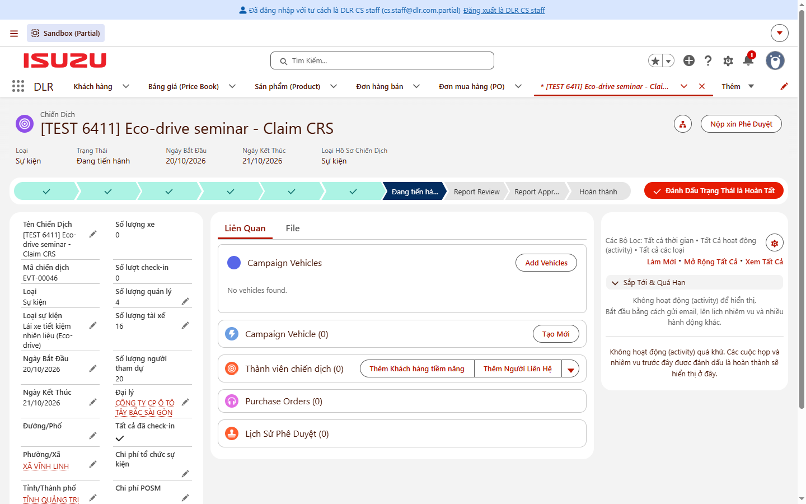
Hình 1 – Chiến dịch ở trạng thái Đang tiến hành, thanh trạng thái có Report Review và Report Approval. - Mở tab Report & Claim: nhóm Actual cost có 2 ô IVC Supported Event Cost và IVC Supported POSM Cost (Đại lý nhập số thực tế). Nhóm IVC Budget Approve ở khối thông tin bên trái (Event Organization Cost, POSM Cost) do CRS nhập khi duyệt kế hoạch, Đại lý chỉ xem.
Ảnh sẽ chụp lại: tab Report & Claim – nhóm Actual cost và khối IVC Budget Approve (góc nhìn Đại lý)
Hình 2 – Nhóm Actual cost (Đại lý nhập) và IVC Budget Approve (chỉ xem). - Bấm bút chì cạnh IVC Supported Event Cost, nhập số thực tế cho tổ chức sự kiện và POSM, chọn Vehicle Type (CV / LCV) rồi bấm Lưu.
Ảnh sẽ chụp lại: Đại lý nhập Actual cost và Vehicle Type
Hình 3 – Đại lý nhập Actual cost và Vehicle Type. - Ở tab Report & Claim, bấm Thêm Tập Tin, tải lên chứng từ chi phí (công văn, hóa đơn…).
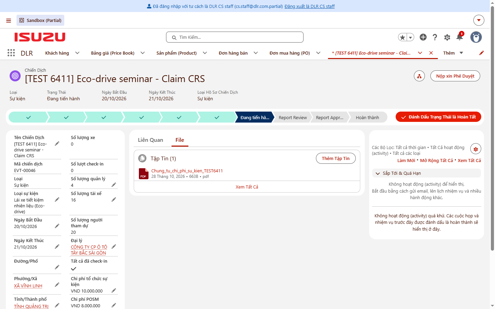
Hình 4 – Chứng từ đã đính kèm (ảnh chụp khi tab còn tên "File", nay là "Report & Claim"). - Bấm Nộp xin Phê Duyệt, nhập nhận xét, bấm Gửi. Chiến dịch chuyển sang Report Review, chờ IVC CRS (Hồ Thiên Quốc hoặc Phạm Mai Trinh) duyệt.
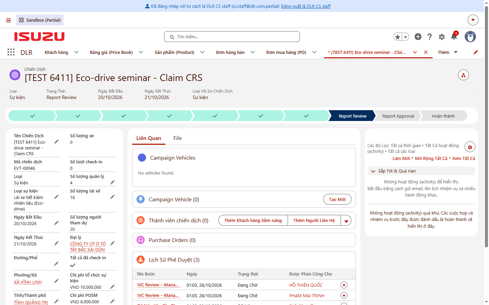
Hình 5 – Sau khi nộp: trạng thái Report Review, Lịch sử phê duyệt đang chờ IVC.
- Thiếu IVC Supported Event Cost hoặc IVC Supported POSM Cost (Actual cost) → báo lỗi, ví dụ: "Vui lòng nhập IVC Supported Event Cost và IVC Supported POSM Cost trước khi nộp báo cáo cho IVC." (Hình 6)
- Chưa có file nào ở tab Report & Claim → "Vui lòng đính kèm công văn đề nghị Đại lý xuất Service SO trước khi nộp cho IVC." (Hình 7)
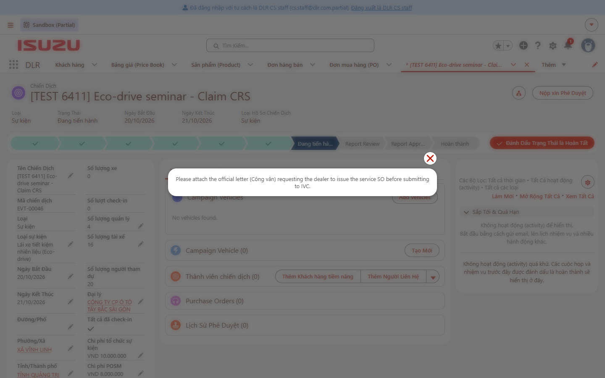
8.2. IVC CRS: nhập ngân sách & duyệt báo cáo chi phí IVC
- Duyệt lần 1 (duyệt kế hoạch): khi là người duyệt hiện tại, Staff CRS mở Chiến dịch, bấm bút chì cạnh Event Organization Cost, nhập ngân sách cho tổ chức sự kiện và POSM (nhóm IVC Budget Approve) rồi Save và Approve. Bắt buộc nhập đủ cả 2 field: nếu để trống, hệ thống báo lỗi "Vui lòng nhập Event Organization Cost và POSM Cost (IVC Budget Approve) trước khi duyệt." và chưa cho sang Manager CRS.
Ảnh sẽ chụp lại: Staff CRS nhập IVC Budget Approve khi duyệt kế hoạch
Hình 8 – Staff CRS nhập IVC Budget Approve (Event Organization Cost, POSM Cost). - Duyệt lần 2 (duyệt báo cáo chi phí): mở yêu cầu phê duyệt (từ thông báo chuông hoặc mục Items to Approve). Trang hiển thị Actual cost Đại lý nhập và Vehicle Type.
Ảnh sẽ chụp lại: trang yêu cầu phê duyệt báo cáo chi phí
Hình 9 – Yêu cầu phê duyệt báo cáo chi phí. - Nếu cần, mở Chiến dịch (bấm tên Chiến dịch), sửa Actual cost (đối chiếu ngân sách IVC Budget Approve và mức trần policy) rồi bấm Save. Người duyệt hiện tại được sửa Chiến dịch trong lúc chờ duyệt.
Ảnh sẽ chụp lại: Staff CRS chỉnh Actual cost khi duyệt
Hình 10 – Staff CRS chỉnh Actual cost (ví dụ POSM từ 8.000.000 về 5.000.000). - Quay lại yêu cầu phê duyệt (hoặc dùng nút Approve ngay trên danh sách Approval History của Chiến dịch), bấm Approve, ghi lý do vào Comments rồi bấm Approve.
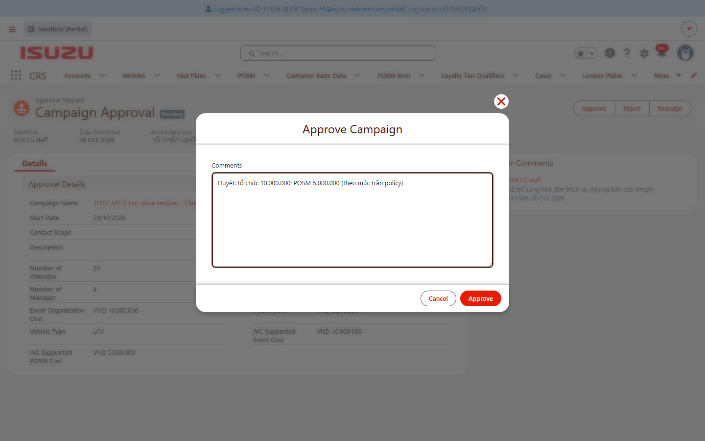
Hình 11 – Approve kèm ghi chú số tiền duyệt. - Chiến dịch chuyển sang Report Approval; hệ thống tự sinh Sales Order CRS Claim ở trạng thái New, gồm 1 dòng Item Service (
CRS_CAM_LCV/CRS_CAM_CVVtheo Vehicle Type) với số tiền = tổng 2 trường Actual cost (ví dụ 15.000.000). Approval cũng gửi email chi phí hỗ trợ cho chủ Chiến dịch (cấu hình sẵn của processCampaignCRS2).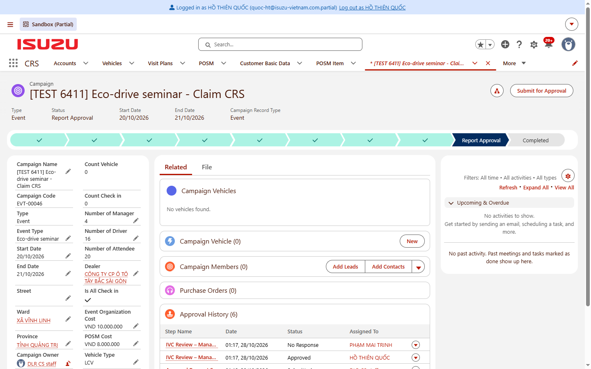
Hình 12 – Chiến dịch ở trạng thái Report Approval. 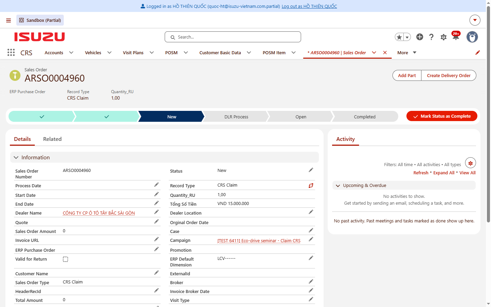
Hình 13 – SO CRS Claim tự sinh: trạng thái New, Tổng số tiền 15.000.000, liên kết Chiến dịch (ảnh chụp trước khi ẩn nút Submit for Approval).
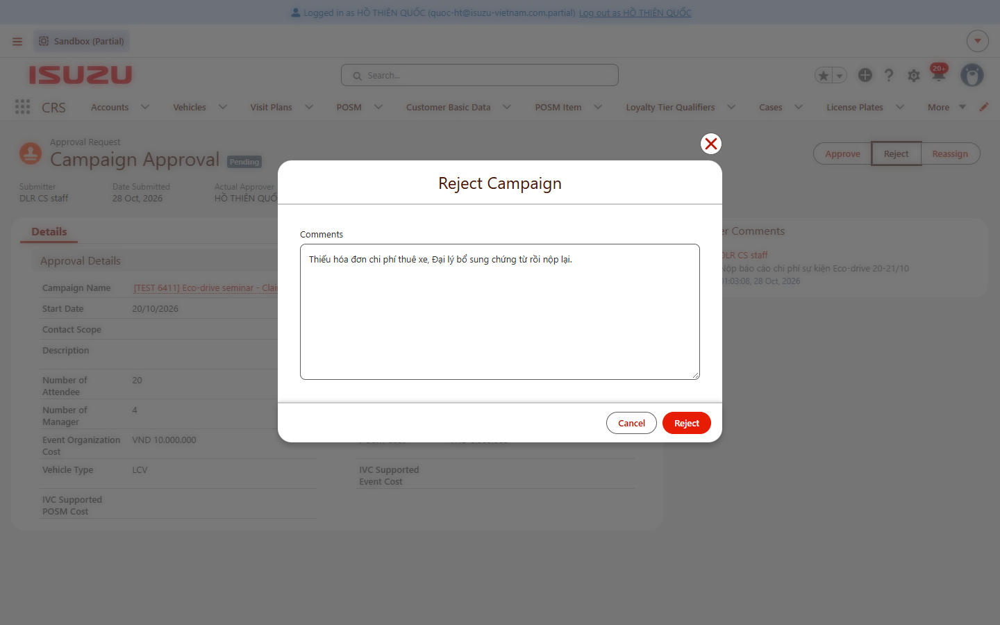
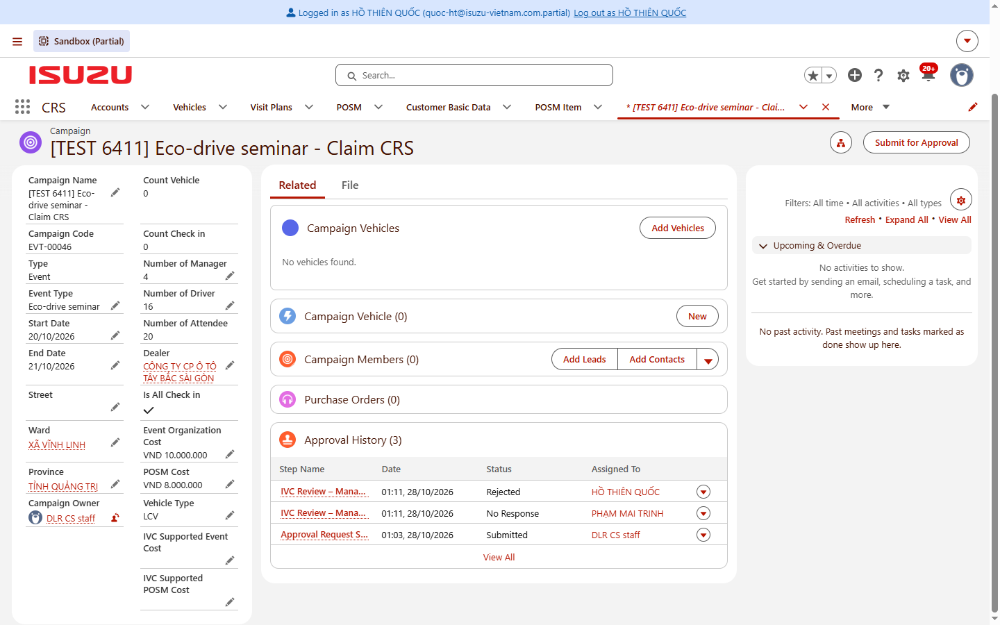
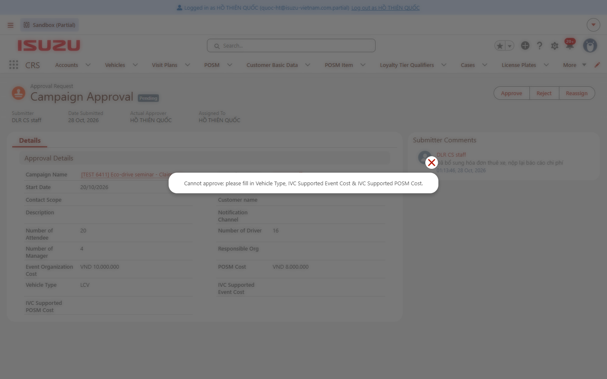
8.3. Đại lý: xử lý SO CRS Claim DLR
- SO tự sinh ở trạng thái New. Khi IVC chuyển SO sang DLR Process, SO xuất hiện nút Submit SO (nút "Submit for Approval" đã được ẩn vì SO này không có luồng duyệt).
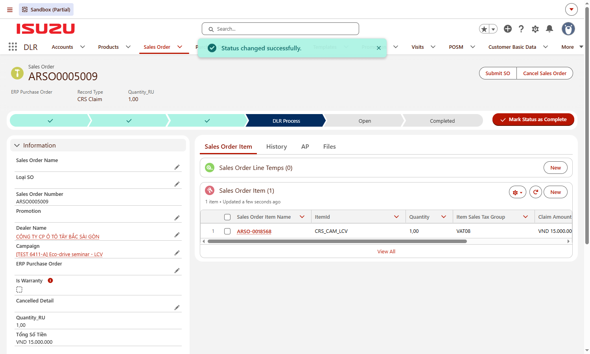
Hình 17 – SO ở DLR Process, có nút Submit SO. - Cùng lúc, Đại lý (chủ Campaign) nhận thông báo trên chuông và email đề nghị đính kèm hóa đơn và bấm "Submit SO".
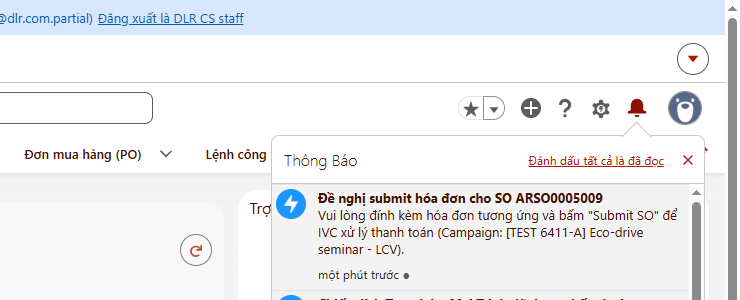
Hình 18 – Thông báo "Đề nghị submit hóa đơn cho SO …" trên chuông của Đại lý. - Nếu bấm Submit SO khi chưa có hóa đơn, hệ thống báo lỗi (tiếng Việt với user Đại lý) và không cho chuyển.
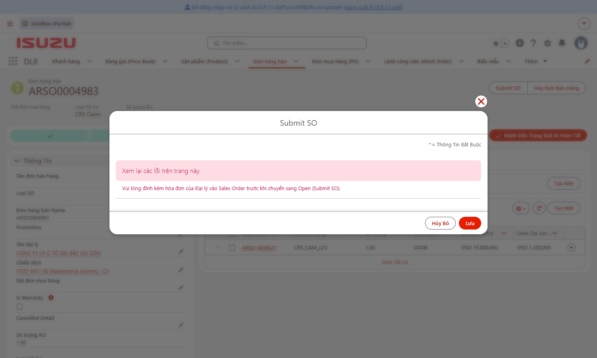
Hình 19 – Submit SO khi chưa có hóa đơn: bị chặn. - Mở tab Files → Thêm Tập Tin, tải lên hóa đơn Đại lý xuất cho IVC.
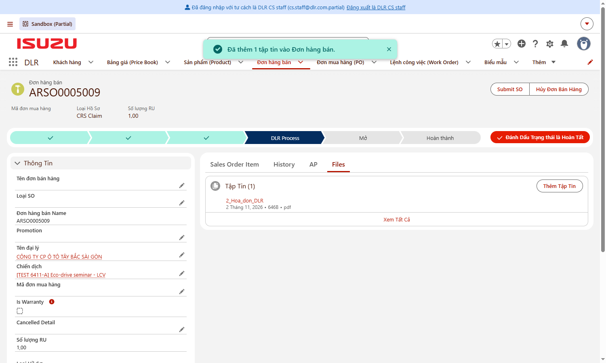
Hình 20 – Hóa đơn đã đính kèm vào SO. - Bấm Submit SO rồi bấm Lưu. SO chuyển sang Open. Hệ thống tự gửi SO lên ERP để tạo PO; số PO ERP trả về được lưu vào SO (trường Mã đơn mua hàng).
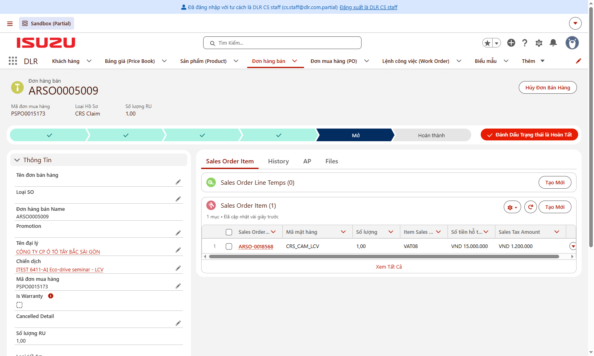
Hình 21 – SO ở trạng thái Mở, đã có Mã đơn mua hàng (số PO ERP).
8.4. Hoàn tất Hệ thống
Không cần thao tác. Khi kế toán IVC ghi nhận hóa đơn của Đại lý vào công nợ phải trả (AP) và thanh toán đủ trên ERP, giao dịch VendTrans được đồng bộ về DMS (Sync Master Data) với Remaining Amount = 0; hệ thống tự chuyển SO → Hoàn thành và Chiến dịch → Hoàn thành.
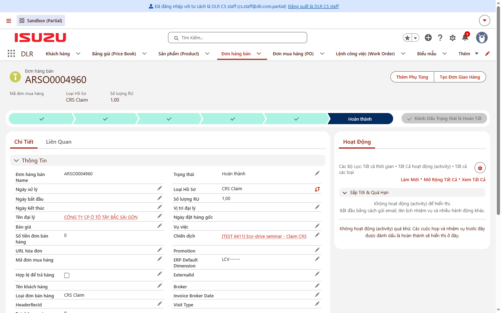
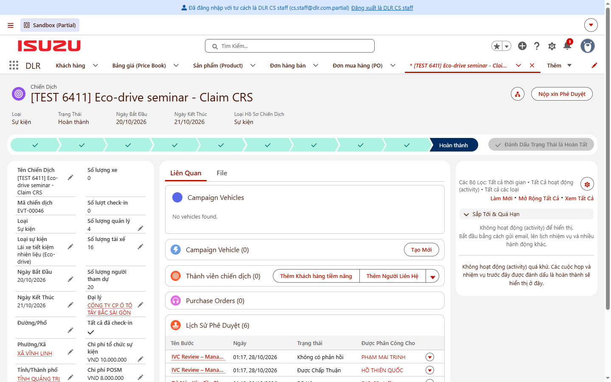